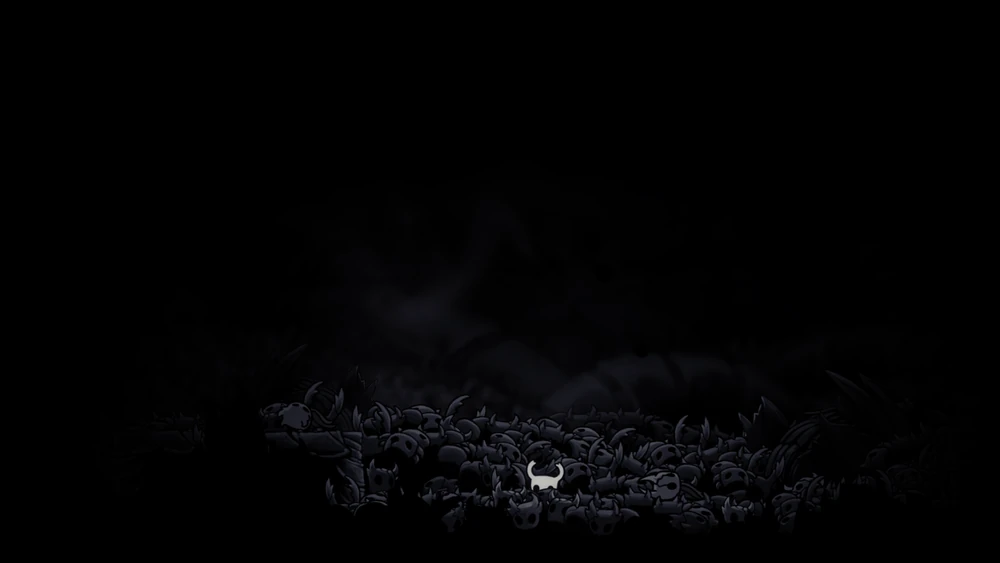

Hallownest foi um grande reino de insetos, criado pelo Rei Pálido quando ele abandonou sua forma de Wyrm e deu consciência a seus súditos. Porém, ao substituir a antiga deusa Radiância, despertou sua fúria: esquecida, ela espalhou a Infecção, uma praga que corrompeu o reino. Para contê-la, o Rei forjou os Vasos no Abismo, seres feitos de Vazio; entre eles, o Hollow Knight, considerado puro, mas imperfeito por ter recebido amor, falhou em aprisionar a Radiância. É então que surge o Cavaleiro, outro Vaso rejeitado, que desce às ruínas, derrota os Sonhadores, enfrenta o Hollow Knight e a própria Radiância. Seu destino varia: repetir o sacrifício do irmão, destruí-la com o poder do Vazio ou até ascender contra deuses em batalhas posteriores. No fim, Hallownest permanece em ruínas, a Infecção pode ser vencida, e Hornet — filha do Rei — segue como guardiã de um futuro incerto, preparando-se para sua própria história em Silksong.
Protagonista

O Cavaleiro é um Receptáculo. Ele é filho do Rei Pálido e da Dama Branca, nascido em o Abismo com Vazio dentro de sua carapaça. Hornet é irmã do Cavaleiro por meio de seu pai comum. Como o restante de seus irmãos Vasos, o Cavaleiro não tem gênero. Depois de sair de seu local de nascimento no Abismo, o Cavaleiro testemunhou seu irmão, o Cavaleiro Vazio, sendo levado para fora do Abismo pelo Rei Pálido. A entrada do Abismo foi selada, fazendo com que o Cavaleiro caísse de volta. Algum tempo depois, apesar de a entrada estar selada, o Cavaleiro e alguns de seus irmãos conseguiram escapar do Abismo. Por fim, o Cavaleiro acabou vagando fora de Hallownest por motivos desconhecidos. O tempo pendente nessa área fez com que o Cavaleiro perdesse a memória, mas o fato de estar lá lhes deu uma certa resiliência. Ele voltou para Hallownest depois que um chamado foi feito pela Radiância ou pelo Cavaleiro Vazio.